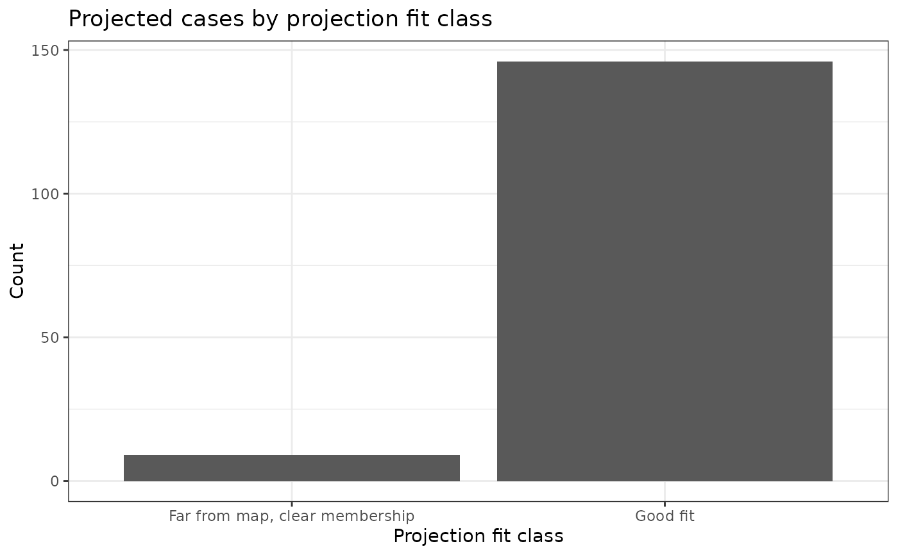
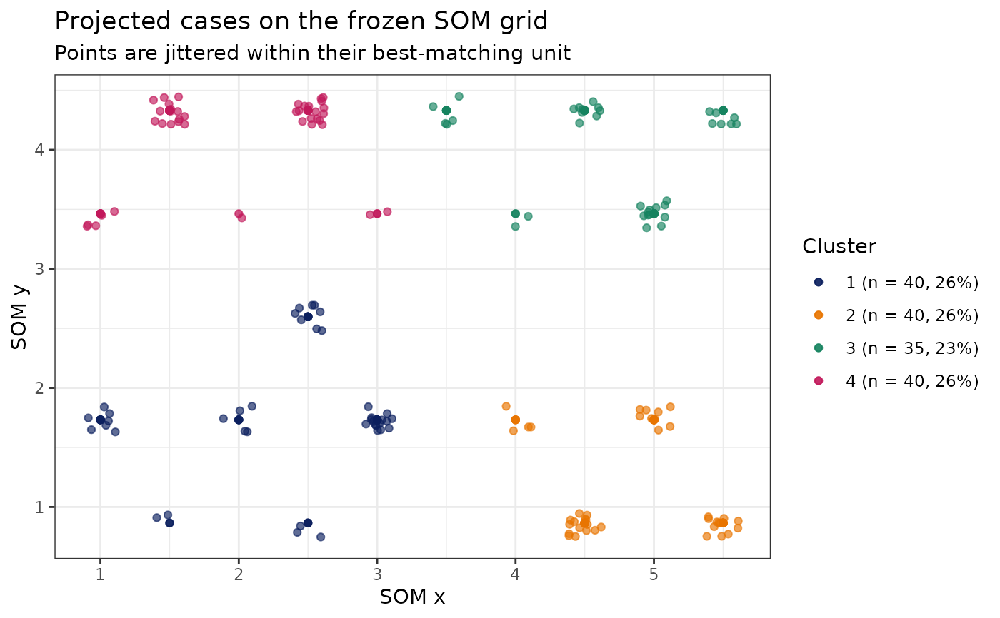
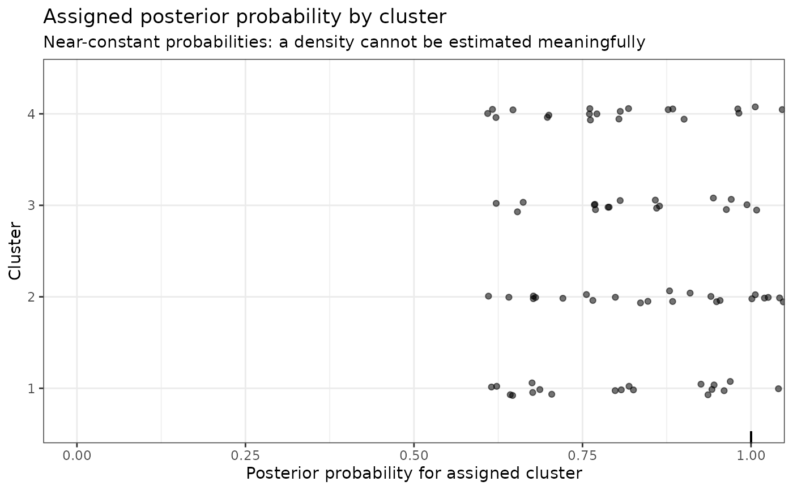

Project cases through a fitted clustering model
Source:R/ProjectCluster.R, R/Project_SOMClust.R
ProjectCluster.RdProjects data through the frozen preprocessing, reduction,
and clustering layers stored in object. Dispatch is determined by the
fitted model's Pipeline_* class; callers do not select a method-specific
projector.
Train once, project many: a reusable unsupervised clinical phenotyping
framework that learns phenotype structure in a training cohort and projects
new participants into the fixed phenotype space while quantifying membership
uncertainty and projection fit. Given a fitted
CreateClusterModel_SOM_MClust()
object, project a new data frame onto:
The same Z-score scaling (via SciDataReportR::ProjectZScore()) when the training object used computed or projected Z-scores.
The same SOM (kohonen), using
kohonen::map().The same node-level latent profiles and posterior probabilities.
If the training object used ZScoreType = "PreZScored", this function
expects the new data already contains the same Z-score columns (by name)
stored in object$ZScoreVars. No re-zscoring is performed.
For each projected case, the function:
Assigns a SOM node and distance to BMU.
Maps node-level cluster/posterior probabilities to the individual.
Computes an overall SOM-distance z-score and flags:
Flag_SOMDist_overallHigh- distance > overall training p95.Flag_SOMDist_clusterHigh- distance > cluster-specific training p95 for that cluster.
Row alignment is preserved without adding internal identifier columns to either the projected data or public diagnostics.
Missing data:
Only rows with complete Z-scores are mapped to the SOM.
Rows with missing Z-scores receive NA for SOM_Node, SOM_Distance, and the cluster label.
Compatibility wrapper for ProjectCluster().
Deprecated alias for ProjectCluster().
Usage
ProjectCluster(object, data, ...)
# S3 method for class 'Pipeline_SOM_MClust'
ProjectCluster(
object,
data,
ClusterVariableName = NULL,
far_distance_quantile = 0.95,
clear_membership_threshold = 0.7,
high_dist_quantile = lifecycle::deprecated(),
low_prob_threshold = lifecycle::deprecated(),
distance_reference = c("loo", "training"),
novel_group_min_n = 3L,
new_df = lifecycle::deprecated(),
...
)
Project_SOMClust(...)
ProjectSOMCluster(...)Arguments
- object
A fitted SOM cluster model.
- data
Data frame of new cases to project.
- ...
Arguments passed to
ProjectCluster().- ClusterVariableName
Optional name for the cluster column; defaults to
object$ClusterVariableName. If that column already exists indatait is overwritten (with a message).- far_distance_quantile
Numeric value between 0 and 1 used to define high SOM-distance flags from the training distance distribution. Default is
0.95.- clear_membership_threshold
Numeric posterior probability threshold used to flag uncertain phenotype membership. Default is
0.70.- high_dist_quantile
Deprecated alias for
far_distance_quantile.- low_prob_threshold
Deprecated alias for
clear_membership_threshold.- distance_reference
Distance cutoff reference, LOO by default or training. One shared q_star calibrates the overall OR cluster rule on training LOO distances to the requested tail rate, within the attainable empirical step. The attained training rate is the chance benchmark for novelty tests and chance_flag_rate. Report the held-out flag rate: remaining excess comes from the map moving without the person and requires refits to remove. No further correction factor is applied. Older models recover training scores or message a fallback. Explicit training references are uncalibrated.
- novel_group_min_n
Minimum far-from-map people in a significant concentration group to call it a candidate new phenotype (default 3). NoveltyGroups returns groups (including row IDs in Members), neighbourhood tests, overall_excess (N, FarN, ExpectedN, P, Excess) and a one-line verdict. Each neighbourhood uses its training LOO far rate; fewer than ten training people are supplemented to ten with pseudo-people at the calibrated training rate. One-sided binomial neighbourhood tests use Holm adjustment; overall excess tests the total far count against the calibrated training rate. This test is separate from groups. Group labels always include their size. FitClass is per person; FitClass_Legacy is deprecated for one release. The rough expected rate of unfamiliar profiles is the training share on one-person nodes, descriptive only. No inference uses this baseline.
- new_df
Deprecated alias for data, accepted by every method.
Value
A method-specific projection result with the common ProjectionFit
contract and ProbFit assignment table.
A list of class "Project_SOMClust" with components:
vars_used,ClusterVariableNameDataWithClusters:datawith only the requested cluster and projection-fit columns appended.ProbFit: list withnode(training node-level posterior info),individual(projected cluster assignments and posterior-probability diagnostics), and probability plots.ProjectionFit: full-length map-fit diagnostics, cohort and cluster summaries, training-support violations, policy, and plots.ModelInfo_SOM,ModelInfo_MClust: references to the original model objects for convenience.
SOM + Mclust projection results
NoveltyGroups contains groups (Group, Nodes, N, Members row IDs,
ShareOfFar, Clusters, NearestCluster, MeanZ, TrainingClusterMeanZ, DifferenceZ,
Candidate, Label), neighbourhood_tests (NodeID, ProjectedN, TrainingN, TrainingFarN,
TrainingFarRate, FarN, ExpectedN, P, HolmP), overall_excess (N, FarN,
ExpectedN, P, Excess) and verdict. Candidate groups meet novel_group_min_n;
neighbourhood groups below that size remain descriptive. Group evidence and
overall far-from-map excess are separate from each person's Flag_FarFromMap.
Per-person FitClass has levels Good fit, Uncertain membership, Far from map,
clear membership, and Far from map, unclear membership. Projection_Fit_Class
mirrors FitClass. FitClass_Legacy is deprecated and retained for one release.
Soft models judge clarity using max(SoftProb_*); hard models use max_prob.
NodeN and Flag_OnePersonNode appear in individual outputs and DataWithClusters.
Specification$projection records distance_reference, far_distance_quantile,
cutoff_quantile (the shared q_star), chance_flag_rate (the attained rate),
clear_membership_threshold, novel_group_min_n and membership_probability.
MembershipProbability in ProjectionFit$individual contains the chosen
per-person clarity probability.
Summary metrics add one_person_node_share, rough_expected_rate_unfamiliar_profiles
(training share on one-person nodes; descriptive only, no inference),
chance_flag_rate and far_from_map_share.
SOM + Mclust projections keep assignment certainty and training-space fit
separate. ProbFit$individual is full length and contains the assigned
Cluster, SOM_Node, available node-derived prob_* columns,
prob_assigned, max_prob, and uncertainty. It answers: which
phenotype was assigned, and how certain is that node-derived assignment?
Models fitted with the hard/soft projection interface also retain
Cluster_Hard, Cluster_Soft, SoftProb_*, SoftEntropy, SoftMargin,
Flag_BoundaryParticipant, and BoundaryReason. Node-level prob_*
values remain the Mclust posterior for a map node; SoftProb_* is a
participant-level proximity-weighted combination of nearby node posteriors.
Boundary flags are confidence diagnostics and never suppress projection.
ProjectionFit$individual is also full length. It contains the frozen
best-matching-unit SOM_Node, SOM_Distance,
SOMDist_percentile_train, Flag_SOMDist_overallHigh,
Flag_SOMDist_clusterHigh, Flag_OutsideTrainingRange, and
Projection_Fit_Class. It answers: how well does this participant fit the
training phenotype space? A high-distance flag compares the participant's
BMU distance with the frozen training 95th-percentile reference; it does
not mean the cluster assignment is necessarily wrong.
ProjectionFit$summary is a metric/value table for cohort size,
completeness, training and projected distance summaries, high-distance
burden, phenotype_drift_index, and node_occupancy_js_divergence.
The latter is Jensen–Shannon divergence between the training and projected
proportions assigned to each frozen SOM node. It is 0 when the two node
occupancy distributions are identical and increases as their cohort-level
map use differs; it is neither an individual fit score nor proof that the
model failed.
ProjectionFit$by_cluster summarizes projected sample size, BMU distance,
high-distance burden, and assignment probabilities by assigned cluster.
ProjectionFit$out_of_support records variables with projected values below
the observed training minimum or above the observed training maximum,
including counts and the training/projected limits. These violations produce
a warning but do not block complete cases from being mapped.
ProjectionFit$policy records the frozen distance and probability
thresholds. ProjectionFit$plots contains projected-distance, QQ,
frozen-grid, and fit-class views. ProbFit$plots$individual_ProbAssignedDensity
uses a 0–1 density when assignment probabilities vary; when they are
essentially constant, it uses an explicit spike/rug display instead of an
uninformative empty density.
Examples
# \donttest{
data("SimulatedPhenotypeData")
df_Training <- dplyr::filter(SimulatedPhenotypeData, .data$Cohort == "Training")
df_New <- dplyr::filter(SimulatedPhenotypeData, .data$Cohort == "Projection")
model <- CreateClusterModel_KMeans(
df_Training, paste0("Var", 1:6), method = "finalize", final_k = 3
)
projected <- ProjectCluster(model, df_New)
projected$ProjectionFit$summary
#> # A tibble: 1 × 9
#> n mean_distance median_distance high_distance_cutoff prop_high_distance
#> <int> <dbl> <dbl> <dbl> <dbl>
#> 1 160 1.33 1.24 2.18 0.0812
#> # ℹ 4 more variables: prop_good_fit <dbl>, prop_uncertain <dbl>,
#> # prop_poor_fit <dbl>, prop_potential_novel <dbl>
# }
# \donttest{
data("SimulatedPhenotypeData")
df_Training <- dplyr::filter(SimulatedPhenotypeData, .data$Cohort == "Training")
df_Projection <- dplyr::filter(SimulatedPhenotypeData, .data$Cohort == "Projection")
model <- CreateClusterModel_SOM_MClust(
data = df_Training,
variables = paste0("Var", 1:12),
method = "finalize",
final_k = 4,
final_model = 1,
som_xdim = 5,
som_ydim = 5,
stability_resamples = 2,
Relabel = FALSE,
candidate_min_nodes_per_cluster = NULL
)
#> Warning: Explicit SOM dimensions (5 x 5 = 25 nodes) are below the floor of 10 nodes per clustering variable (120 nodes for 12 variables); diagnostics are retained for review.
#> Warning: The following SOM mixture candidates have fewer mixture nodes than free parameters and are ineligible for recommendation: Model 1, k = 4
#> Warning: No candidate is eligible for the composite recommendation; an internal fallback is retained only to construct the review object.
projected <- ProjectCluster(object = model, data = df_Projection)
#> Warning: Projected data include values beyond the observed training range for: Var1, Var2, Var4, Var5, Var6, Var8, Var9. These cases are still mapped; review ProjectionFit$out_of_support.
#> far-from-map people, no group found; no far-from-map excess
head(projected$ProbFit$individual)
#> # A tibble: 6 × 27
#> NodeN Flag_OnePersonNode FitClass FitClass_Legacy Flag_FarFromMap .row_id
#> <int> <lgl> <fct> <chr> <lgl> <int>
#> 1 NA NA NA NA FALSE 1
#> 2 NA NA NA NA FALSE 2
#> 3 NA NA NA NA FALSE 3
#> 4 NA NA NA NA FALSE 4
#> 5 NA NA NA NA FALSE 5
#> 6 12 FALSE Good fit Good fit FALSE 6
#> # ℹ 21 more variables: SOM_Node <dbl>, prob_assigned <dbl>, prob_1 <dbl>,
#> # prob_2 <dbl>, prob_3 <dbl>, prob_4 <dbl>, Cluster <int>, NodeCluster <int>,
#> # Flag_NodeDisagreement <lgl>, max_prob <dbl>, uncertainty <dbl>,
#> # Cluster_Hard <int>, Cluster_Soft <int>, SoftEntropy <dbl>,
#> # SoftMargin <dbl>, Flag_BoundaryParticipant <lgl>, BoundaryReason <chr>,
#> # SoftProb_1 <dbl>, SoftProb_2 <dbl>, SoftProb_3 <dbl>, SoftProb_4 <dbl>
projected$ProjectionFit$plots$projection_fit_class_bar

projected$ProjectionFit$plots$som_grid_map

projected$ProbFit$plots$individual_ProbAssignedDensity

# }